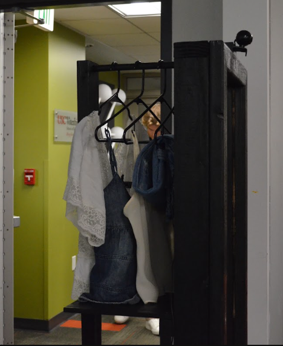

Camera Input → MediaPipe Landmarks → Joint Vectors / Transformations → Smoothing → Avatar Visualization
The original system smoothed calculated bone rotations and sent them to Unity through Flask. The browser demo drives the sleeves while you sit. The pants hold their pose until both hips, knees, and ankles are in view.
See the real system

- Technology
- MediaPipe Pose, joint vectors, rotation matrices and quaternions, smoothing, Flask, and Unity.
- My role
- Developed the entire 3D system shown in the demo, including the Unity visualization and outfit switching. Converted tracked joint movement into bone rotations and smoothed the motion so the virtual clothing followed the wearer in real time.
- Project outcome
- The original demo shows a tracked digital outfit moving with the wearer and a swipe that switches tops.